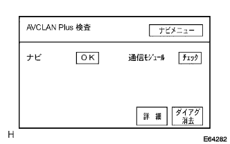
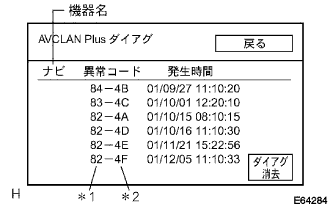
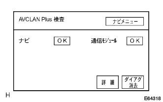

参照)参照)参照)
参照)参照)参照)G-BOOKシステム AVC-LAN plus検査(AVC-LAN plus接続確認およびダイアグコード確認) |
参照)参照)参照)| 手順1 | ダイアグノーシス起動 |
ダイアグノーシスを起動する。(要領は参照)
| 手順2 | AVC-LAN plus検査（AVC-LAN接続確認） |
AVC-LAN plus検査
“検査メニュー”を選択する。
“ナビ検査”を選択する。
|  |
“AVC-LAN plus検査”を選択する。
| 表示 | 意味 |
|---|---|
| 機器名称 | 後付け部品も含め、名称を表示する(名称が不明な場合は物理アドレスを表示する) |
| 検査結果 | 検査結果を表示する |
下記の各接続機器が、すべて表示されることを確認する。
| 機器名称 | 部品名称 |
|---|---|
| ナビ | ナビゲーションコンピュータ |
| 通信モジュール | テレマティクストランシーバ |
以下の表を参照して指定の飛び先に進む。
| 表示機器名称 | 飛び先 |
|---|---|
| 全接続機器が表示される | A |
| “ナビ”以外の機器がすべて表示されない(ナビは“チェック”表示する) | B |
| “ナビ”以外の機器がすべて“未接続”表示される(ナビは“チェック”表示する) | B |
照)
|
| ||||
| A | |
| 手順3 | AVC-LAN plus検査（ダイアグコード確認） |
AVC-LAN plus検査
検査結果を読み取る。
以下の表を参照して指定の飛び先に進む。
| 検査結果 | 意味 | 飛び先 |
|---|---|---|
| チェック | ダイアグ起動時に応答があり、ダイアグコードの入力がある | A |
| 未接続 | 過去に一度はシステムに登録されているが、ダイアグ起動時に応答がない | B |
| AVC-LANに接続されているが、機器名称·検査結果ともに表示されない | システムに登録された履歴がなく、ダイアグ起動時に応答がない | B |
| OK | ダイアグ起動時に応答があり、ダイアグコードの入力がない | C |
参照)
|
| ||||
|
| ||||
| A | |
| 手順4 | AVC-LAN plusダイアグ |
AVC-LAN plusダイアグ
検査結果が“チェック”の時は、この表示を選択しAVC-LAN plusダイアグ画面に移行する。
|  |
出力されているダイアグノーシスコードの内容を確認し、記録する。
| 表示 | 意味 |
|---|---|
| 機器名 | 対象となる機器名 |
| 区分(*1) | 対象となる論理アドレス番号 |
| ダイアグコード(*2) | ダイアグコード |
| 発生時刻 | ダイアグコード検出時の年月日時分秒を表示する |
| ダイアグ消去 | 表示中の機器のダイアグ情報をクリアし、表示もクリアする(3秒長押し) |
| 戻る | “AVC-LAN plus検査”画面に戻る |
| 手順5 | ダイアグコード一覧へ |
ダイアグコード一覧の指示に従い、点検および修理を行う。(要領は参照)
| 手順6 | ダイアグノーシス起動 |
ダイアグノーシスを起動する。(要領は参照)
| 手順7 | ダイアグコード消去 |
AVC-LAN plus検査
“検査メニュー”を選択する。
“ナビ検査”を選択する。
“AVC-LAN plus検査”を選択する。
| 表示 | 意味 |
|---|---|
| ダイアグ消去 | ダイアグ検査結果をクリアし、検査結果の画面表示内容もクリアする(3秒長押し) |
消去
“ダイアグ消去”を選択(3秒以上長押し)し、ダイアグ消去を行う。
| 手順8 | 再検査 |
|  |
AVC-LAN plus検査(再検査)
“検査メニュー”を選択する。
“ナビ検査”を選択する。
“AVC-LAN plus検査”を選択して再度検査を行い、“OK”表示を点検する。
| ||